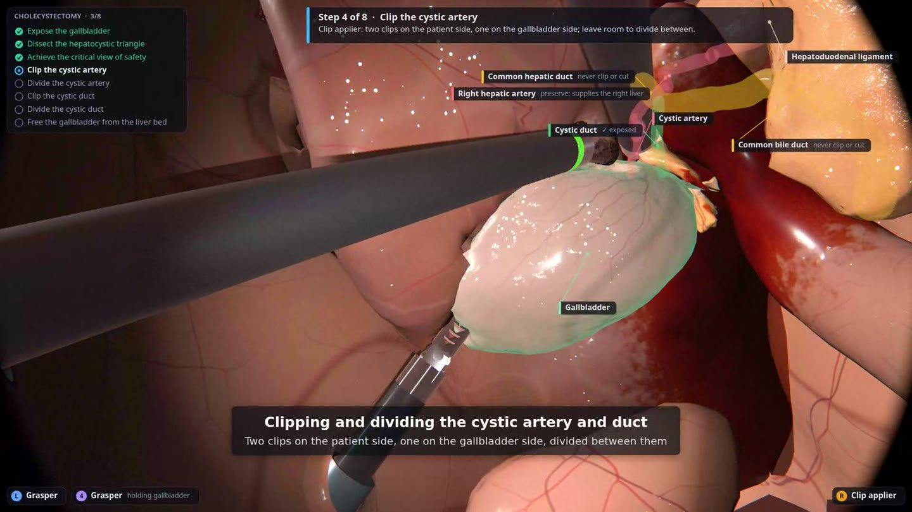
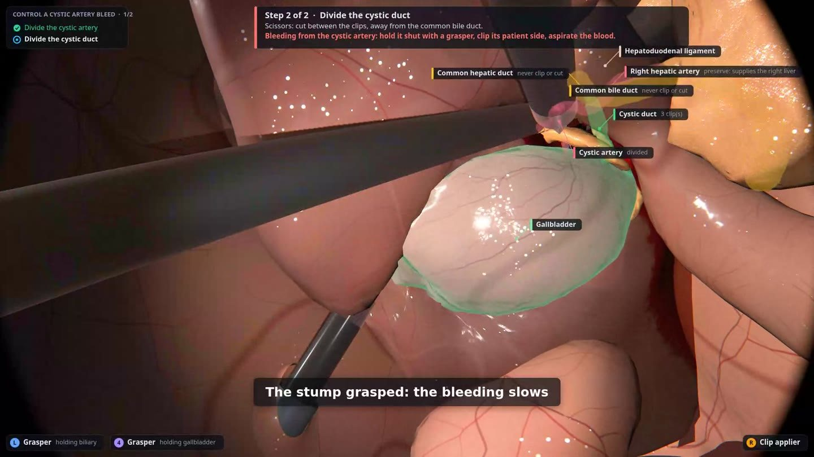

Teaching layer
Drawn over the 3D view in every scene and every view (desk, laparoscope, console, streamed device). It is display only: it reads the task state the server already sends and never changes the physics.
What it draws
Step banner and list
"Step n of m" with a one-line instruction at the top; the task's checklist on the left: done, current (pulsing) and to do.
Critical view of safety
The three criteria, each with a bar: the triangle cleared (≥ 80 %), the lower third of the gallbladder off its bed (≥ 80 %), two structures exposed (≥ 70 %), ticked as each is met.
Structures
Each duct and artery (and the appendix) tinted where it shows and its course drawn faintly where tissue hides it, labelled with its state; the gallbladder outlined; the hepatocystic triangle shaded until the critical view.
Clip and scissors guides
In a clip or divide step, a translucent clip applier or scissors through the port of the arm that holds one, its jaws across the vessel where the next clip or cut goes.
Event notes
Bleeding, bile leaks, clips placed, structures divided, thermal injuries, tears, the critical view: a marker that follows the tissue, a note and the points lost.
Instrument names
Each instrument by its arm at the bottom corners, "energy" while it burns, "holding <organ>" while it holds.


Display anatomy
From each scene's own CT meshes, the page also draws the retroperitoneal floor behind and below the liver (blood pools there, in Morison's pouch), the right hepatic artery behind the common hepatic duct (to preserve), and a translucent hepatoduodenal ligament. None of it reaches the physics.
Switches
- On in guided steps; in an assessment the teaching part (banner, list, highlights, guides) is off and the event notes and instrument names stay.
- One scale for every screen, laid out in the part of the view no control covers; the same colours in light and dark themes.
- In a streamed view the server page draws it into its video frame.